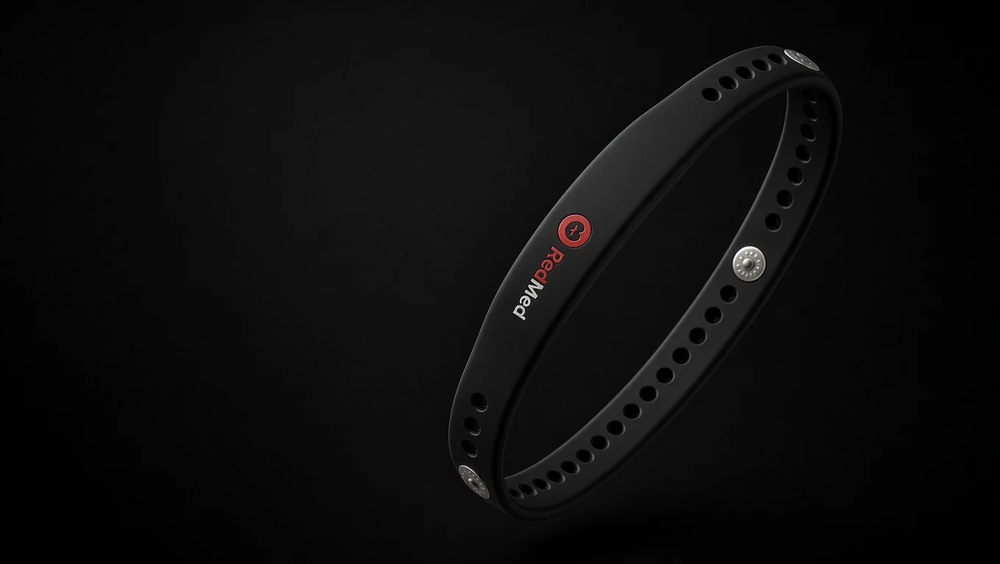
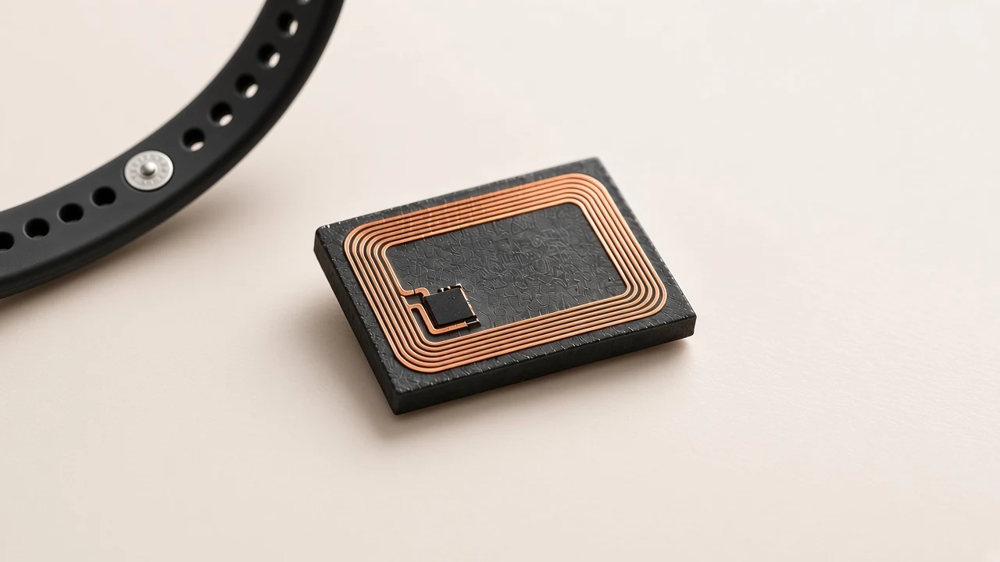

Prepare your information
Choose the emergency details and contacts you want to carry. The Owner app is designed to keep your profile on your iPhone.
BUILT FOR THE MOMENTS THAT MATTER
When you can’t explain, let your wristband speak. Emergency information, connected by a tap.
NFC medical ID · In development

01 / FROM WRIST TO INFORMATION
Rare conditions shouldn’t mean missing information. We’re building a clearer way for someone nearby to understand what you’ve chosen to share.
Choose the emergency details and contacts you want to carry. The Owner app is designed to keep your profile on your iPhone.
A compatible NFC band carries the emergency-card link. Hardware activation is still under validation.
A responder opens the card without signing in. Wearer-selected information supports communication, not diagnosis or treatment decisions.

NFC ANTENNA / CONCEPT DETAIL02 / SMALL TECH. HUMAN PURPOSE.
Target hardware specification. Product imagery is conceptual. Physical read/write validation is a release requirement, not a completed certification.
03 / YOUR INFORMATION. YOUR CHOICE.
Your account is for your bands.
Not your medical history.
Account email and non-medical band metadata live in our account system. Medical profiles do not. Anyone with your band’s payload can read the information you deliberately put on it.
A FEW IMPORTANT ANSWERS
No fine-print promises about something this important.
The Assist web card is designed to open from a compatible phone’s NFC reader or camera without a RedMed account. Device compatibility and a usable web connection or previously cached shell are required.
This portal can register a chip’s serial number on supported Web NFC devices, or let you enter it manually. That is an inventory record, not medical-card activation. The native iOS writing and read-back flow remains a separate, gated feature.
A previously loaded Assist shell may work from its cache. A phone that has never opened it cannot rely on offline access. Keep essential engraved information or another non-digital backup.
No. Statuses here are private inventory labels. A local payload on a band cannot be remotely revoked or rewritten through this account.
RedMed is in development. Clinical-content review, physical-band validation and production-origin readiness are still release gates. It is not a replacement for emergency services or professional medical care.
BUILT FOR PEOPLE. READY FOR POSSIBILITY.
Create your RedMed account and organize your band records.